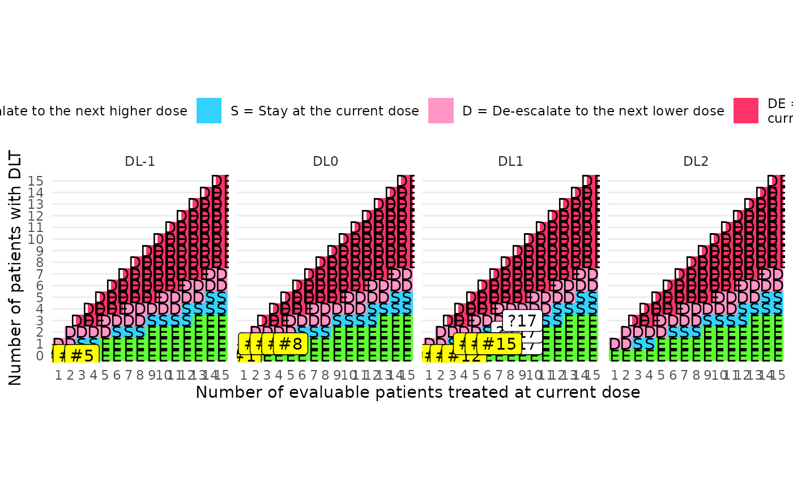
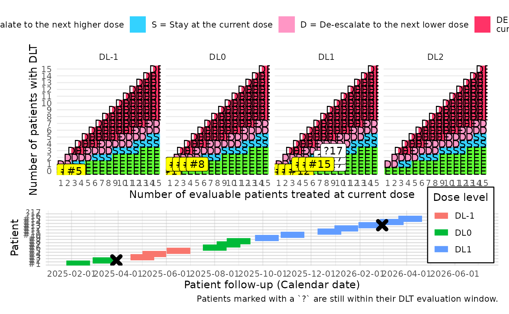

![[Experimental]](figures/lifecycle-experimental.svg)
Generates a plot of decision boundaries from a BOIN design, optionally
overlaid with patient-level data and a Gantt-style timeline.
Usage
boin_plot(
data_boin,
data_patients = NULL,
...,
doses,
gantt_include = FALSE,
gantt_labels = NULL
)Arguments
- data_boin
A
boinobject from theBOIN::get.boundary()function or adata.framewith columnsn_eval,escalate_if_inf,deescalate_if_sup,eliminate_if_sup.- data_patients
Optional data frame containing patient-level information, with columns
subjid,dose(character), anddlt(logical). Ifgantt_include==TRUE, it must also include the DLT evaluation period withdate_dlt_startanddate_dlt_end.- ...
Unused.
- doses
Vector of dose labels, matching the order of dose levels in the BOIN design.
- gantt_include
Logical, whether to include a Gantt chart of follow-up.
- gantt_labels
Optional vector with labels as names and dates as values, to display in the Gantt chart.
Value
A ggplot2 object showing BOIN decision rules and patient data overlay (optional). If
gantt_include==TRUE, the output is a patchwork object with an additional Gantt diagram.
Examples
#use a cohort size of 1
boin = BOIN::get.boundary(target=0.3, ncohort=15, cohortsize=1)
#In this example, 17 patients are included, 15 of which are already evaluated.
#Patients are deemed evaluable
set.seed(123)
data_patients = tibble(
subjid = 1:17,
dose = c("DL0", "DL0", "DL-1", "DL-1", "DL-1", "DL0", "DL0", "DL0",
"DL1", "DL1", "DL1", "DL1", "DL1", "DL1", "DL1", "DL1", "DL1"),
dlt = c(FALSE, TRUE, FALSE, FALSE, FALSE, FALSE, FALSE, FALSE,
FALSE, FALSE, FALSE, FALSE, TRUE, FALSE, FALSE, NA, NA),
date_dlt_start = as.Date("2025-01-01") +(1:17)*30 + rnorm(17, 0, 10),
date_dlt_end = date_dlt_start+30
)
#default
boin_plot(boin,
doses=c("DL-1", "DL0", "DL1", "DL2"))
#with patient labels
boin_plot(boin, data_patients=data_patients,
doses=c("DL-1", "DL0", "DL1", "DL2"))

#with gantt diagram
p = boin_plot(boin, data_patients=data_patients, gantt_include=TRUE,
doses=c("DL-1", "DL0", "DL1", "DL2"))
p
#with post production
p[[1]] = p[[1]] + ggplot2::scale_color_manual(values=c("red", "green", "blue", "yellow"))
p[[2]] = p[[2]] + ggplot2::scale_x_date(breaks=scales::breaks_width("2 months"))
p

#with gantt labels
gantt_labels=c("Plot cutoff date"=as.Date("2026-06-01"),
"Dose reevaluation"=as.Date("2025-04-11"),
"Dose reevaluation"=as.Date("2025-07-03"),
"Dose reevaluation"=as.Date("2025-09-17"))
boin_plot(data_boin=boin, data_patients=data_patients,
doses = c("DL-2", "DL-1", "DL0", "DL1"),
gantt_include=TRUE,
gantt_labels=gantt_labels)